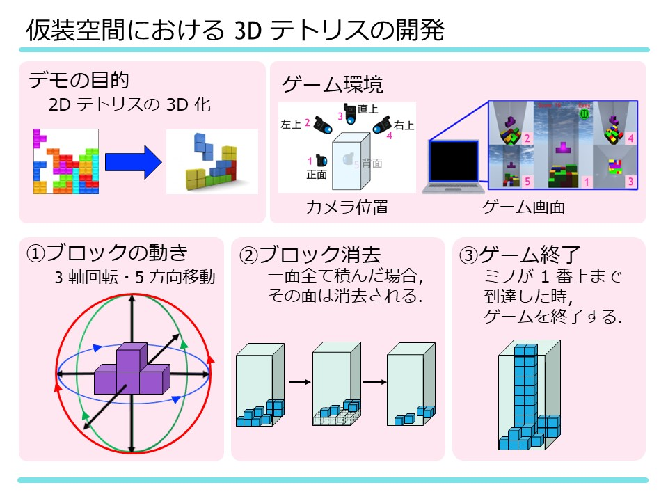

概要

画面・動作イメージ

使用技術
実装機能
- ブロックの移動・回転・落下処理
- ライン判定および消去処理
- 画面分割による全方向同時表示
- 難易度設定
工夫・設計上のポイント
- 初期段階ではカメラ視点を切り替える方式を採用していたが、 視点操作が増えることで判断が遅れ、ゲームとしてのテンポや 没入感が損なわれる課題があった。 そこで画面分割方式へ変更し、操作を増やさずに 常に全方向を把握できる構成とした。
- ゲームロジック、表示処理、UI制御を分離し、 調整や試行錯誤を繰り返しやすい構成で実装した。
- 難易度設定は3段階用意し、 プレイヤーの熟練度に応じて楽しさを調整できる設計とした。
- BGMや演出を取り入れることで、 ゲームへの没入感を高め、より良い体験が得られるようにした。
リンク
-
デモ動画（音量にご注意ください）
https://www.youtube.com/watch?v=H2eoZlrT-KM